By Scott Selfon, Audio Content Consultant, Xbox Advanced Technology Group
Note This paper refers to interactive audio cues, which were first released in the June 2003 Xbox® Development Kit. To use them, make sure your content is authored with a release of the authoring tool supporting XACT interactive audio, and that your title is compiled with the corresponding version of the XACT library.
This white paper provides an introduction to the interactive audio features present in the Xbox Audio Creation Tool (XACT). We'll define interactive audio for the purpose of this paper to refer to any kind of music or sound design that might need to dynamically change based on game events, beyond the ability to simply start or stop. The line between this kind of nonlinear audio and more dramatically dynamic sounds (such as car engines) can become somewhat blurred depending on how interactive the music is, and the features we'll discuss will reflect that there are often two ways to approach interactive audio: run-time parameter controls for scenarios involving layering and volume changes, or interactive audio cues for branching music. Do note that the two cannot be mixed and matched (that is, an interactive audio cue cannot use run-time parameter controls).
Many of the features discussed here build on concepts XACT users are already familiar with. If you are new to XACT, it might be helpful to first review the appropriate chapters of the Best Practices Guide for Xbox Audio Design — Chapter 9: Authoring with the Xbox Audio Creation Tool (XACT) for content creators, or Chapter 10: Programming with the Xbox Audio Creation Tool (XACT) for audio programmers.
Though intended primarily for strongly dynamic sounds such as engines, XACT run-time parameter controls (RPCs) can also be used in some interactive audio scenarios. Specifically, RPCs can be used to dynamically add or remove layers of orchestration, or to transition between several pieces of music. Remember that RPCs operate at the sound instance level; beyond the special case of sound categories, there is no concept of a global RPC (though a programmer could of course adjust RPCs on several playing cues simultaneously). This means that most of our interactivity when using RPCs is going to reside in the sound; contrast this to interactive audio cues, where the interactivity resides in the cue, including how it chooses which sound to play, and when.
The term "layering" is somewhat overloaded here, as XACT already uses layers to determine what sound to play (on any given layer, only one cue can be playing at a time; layer is specified in a sound's properties). In the case of interactive audio, when we talk about layering, we have several different parts of a piece of music that we want to be able to independently control the volumes of. As we'll discuss more below, each of our score's elements are actually playing simultaneously, but we'll be able to adjust their relative volumes based on game state using a run-time parameter control.
For example, we might have three different crowd elements to mix based on game state. When nothing is happening, we should only hear the basic crowd ambience; when an exciting play happens, louder crowd cheers should be brought in; and when our team scores, add even denser crowd noise.
We first author a sound that consists of multiple tracks, one with each crowd element. For this particular example, we'll make every track loop, and also have several different versions of some of the elements. (If we want new variations to be chosen on each loop, don't forget to make the wave bank streaming, and all of the waves to be chosen from to be the same format.)
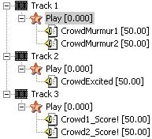
Illustration A multi-track sound ("CrowdAmbience"), with two variations for the low-level crowd murmur and two more for their reaction to the team scoring.
Of course, if we try playing this sound, we're going to hear all three tracks play at full volume at once—not what we are intending. So the next step is to create a run-time parameter control on this track that will scale the volumes based on the game state. Open the sound's property window, go to the Parameter Controls tab, and click Add to add a new RPC. We'll name it 'Crowd Energy' and start drawing volume curves for our three tracks. In the game, the programmer will adjust the crowd's energy level based on whatever is appropriate, and that energy level will now correspond to the volumes of our multiple elements.
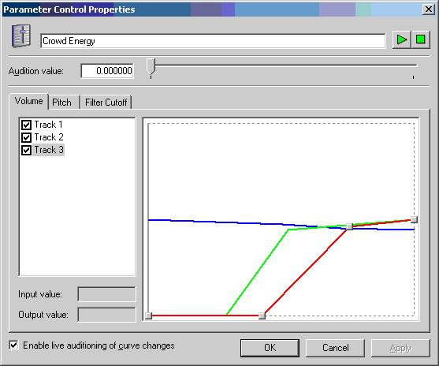
Illustration Volume curves for our three tracks. Track 1 (blue) slowly ramps down as the energy level grows (so other elements come to the front). Track 2 (green) comes up fairly sharply as the energy level rises to around 50%, then continues to increase up to full energy. And Track 3 (red) comes up at around 75%, similarly rising in volume up to full energy. Note that the range for volume curves is -64 dB to +64 dB. Sounds cannot get "louder" than 0 dB, so all of the curves in the above example peak halfway up the range, at 0 dB. Positive range is generally used when multiple RPCs are affecting a single sound.
You can try out your RPC from this same dialog box by hitting the play button and moving the slider control around. Nothing says that layering has to be an additive process; because the content creator can draw arbitrary curves, several pieces of music or ambience could crossfade rather than mixing.
Adjustments to an RPC don't have to occur at any arbitrary time. Content authors can place marker events in their content. For instance, if the above example was changed from crowd ambience to music, we might want parts to adjust their volumes only on measure boundaries. Assuming every piece was authored at the same tempo, we add a recurring marker that the programmer can be notified by—letting them know when it is okay to adjust an RPC value. It is up to the programmer to register for and respond to these markers (unlike in interactive audio cues).
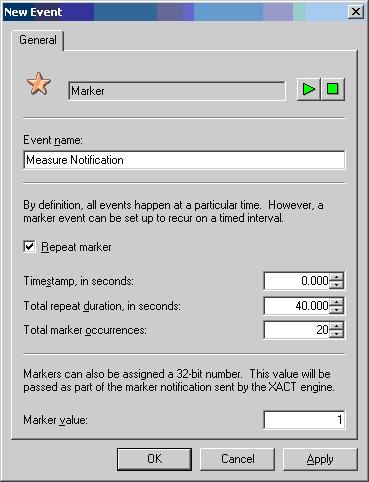
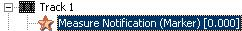
Illustrations For a 40-second piece of music (repeat duration) in 4/4 with 120 beats per minute, we've got 20 bars of music (total occurrences). Starting from the beginning of the sound (timestamp at zero seconds), this marker will fire on every measure, or every 2 seconds (40/20).
Do note that every track (though not every wave variation in each track) is playing simultaneously; some of them may be silent, depending on your RPC curves and the current run-time value the programmer has set, but as far as the Xbox is concerned, they're still playing. This is the tradeoff with immediately accessible dynamic content: It can respond to changes immediately, but takes more memory (especially for in-memory sounds) and more bandwidth (for streaming sounds), as the individual tracks never stop playing as long as the sound is playing.
We define branching to mean various separate pieces of content being able to smoothly dovetail into each other based on game events. Run-time parameter control's branching functionality is much more limited than interactive audio cues, but can still be quite effective in many circumstances. Here, we make use of a different kind of run-time parameter control, one that instead of adjusting volume, pitch, and filter cutoff, determines which variation is chosen.
For example, we'll have several pieces of music (all must be the same format, and all in a streaming wave bank) corresponding to low, medium, and high intensity. We add all three as variations in a one-track sound.
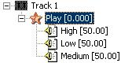
We make the play event loop as with our ambience example.
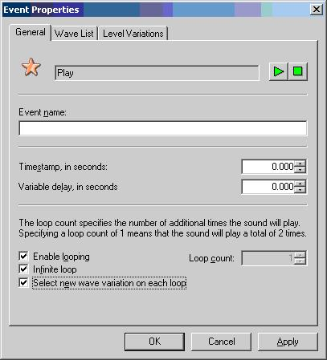
Illustration The play event's property window (opened by double clicking). Note the Select new wave variation on each loop option—this is how our music is going to branch.
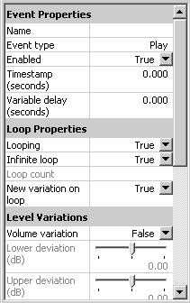
Illustration An alternate way to edit an object's properties - click an object to view its properties in the property pane (without having to open its property window).
Rather than creating an RPC, we're now going to use one of the "built-in" run-time parameter controls, which can be used to drive variation selection. (For the programmers in the house, this run-time parameter control is the one defined in xact.h as XACT_PARAMETER_CONTROL_WAVE_VARIATION.) We open the sound's property window (this particular aspect is not viewable in XACT's property pane) and change the playlist type to Parameter-controlled.
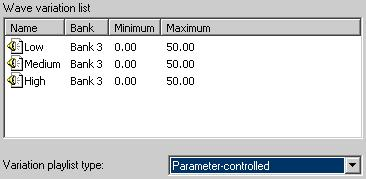
The column that was previously Weight (how frequently this variation should be chosen relative to other variations) becomes two columns - Minimum and Maximum. These allow us to define the range for the RPC where a variation will be chosen. If two or more variations' ranges overlap, an RPC value within the overlapping area will cause any of the 'legal' options to be chosen. The ranges can be edited by clicking the Weight button.
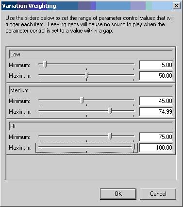
Illustration Setting up the ranges for our three variations.
As the programmer adjusts the game-dependent run-time parameter control for this sound's wave variations, the wave that is played will be:
| RPC value | Which wave variation is played |
|---|---|
| 0–4.99 | Nothing (silence) |
| 5–44.99 | Low |
| 45.00–50.00 | Low or medium (randomly choose between) |
| 50.00–74.99 | Medium |
| 75.00–100.00 | High |
The limitations with this kind of branching are fairly obvious: the music "responds" only when a variation reaches the end of playback and a new variation needs to be chosen, so this technique probably won't be useful for more rapid changes. In addition, each variation will have to be able to seamlessly play right into the next, with no transitions or crossfades possible. Each piece of music that is played will be played beginning to end; there's no way to jump ten seconds into our low-intensity music, nor can you easily interrupt the high-intensity music to switch to medium-intensity in the middle of a loop. And you cannot audition these RPCs in the authoring tool, so a programmer will have to integrate the cue into the title (or write a custom Xbox sample to allow you to experiment). Nonetheless, for many scenarios such as background ambience and more simple underscores, run-time parameter controls can be a compelling branching solution. For musical changes that need to be more flexible, consider interactive audio cues instead.
Interactive audio cues provide significant enhancements to the functionality available with run-time parameter controls. First and foremost, they allow the composer to define a set of parameters for how one piece of music transitions into other pieces of music. These transitions are then handled automatically by XACT; the programmer does not have to register for any special marker notifications, worry about playing and stopping sounds corresponding to aspects of the music, and so on. They start the interactive audio cue and generally just leave it playing. As game events dictate, the programmer can adjust global variables (via IXACTEngine::SetVariable), similar to run-time parameter controls, but potentially affecting several playing cues simultaneously. The music then responds as the composer has authored. If the composer later adds more music states, the programmer does not need to adjust their code in any way for these states to be reached and played.
Interactive audio cues use sounds rather than waves as their building blocks, opening up quite a bit more flexibility than run-time parameter controls, since each individual sound can still have its own built-in variability. Think of each sound as a state that the music can be in. The composer then dictates how the music moves from state to state.
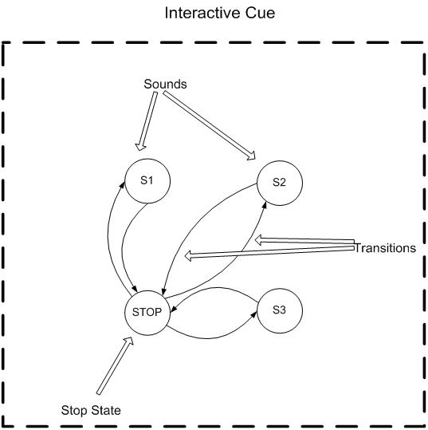
Illustration A visual representation of four different states in a sample interactive cue. S1, S2, and S3 are three separate sounds, and there is a 'Stop' state as well. Note that the drawing is not showing every single transition link; S1 can go to and from S2, for instance.
Note the presence of a 'Stop' state. Every interactive cue has this extra state so that all of the sounds can define how they should stop and start, not just transition to each other. In addition, an interactive cue might be in the 'Stop' state but still technically be "playing", allowing it to move back into one of the other states as variables dictate (without the programmer having to "play" the cue again).
Let's focus first on the simplest interactive cue, which has a single sound, and therefore two states. Turning a regular cue into an interactive audio cue is as simple as opening that cue's property window, going to the Interactive Audio tab, and checking the Enable interactive audio transitions option.
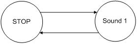
The transition list now displays all of our states. First we decide which global variable is going to affect this interactive cue's playback and be its trigger variable. Trigger variables are not the same as run-time parameter controls in that they are independent of any particular playing sound. They are also modified using a different programmatic function than run-time parameter controls. For the most common scenario of a single interactive cue playing at a time, the default variable 0 is probably fine. In a more complex implementation, you might use different variables (there are 32) for each interactive audio cue to independently control each.
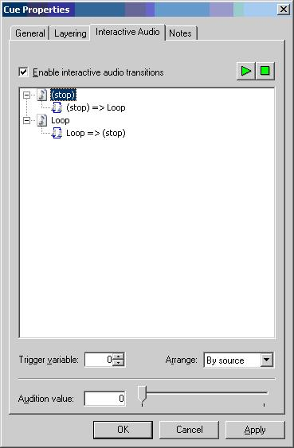
Illustration Enabling an interactive audio cue.
When we expand the 'Stop' and 'Loop' nodes above, we get a list of all of the states they can go to. (Incidentally, if we choose By target in the Arrange drop-down menu, we get the opposite view—all of the states that can go to this state.) By double clicking on any of these transitions, we can set their properties.
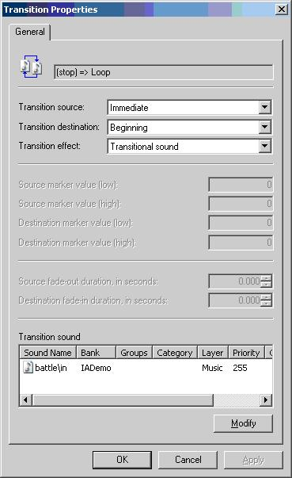
Illustration The transition properties for moving from the 'Stop' state to our 'Loop' sound state.
Let's break out the several aspects of transitions to explain all of these options. The easiest way to think of the three aspects are the questions that we want answered for our transition: when to leave the source sound, how to get to the destination sound, and where in the destination sound to start playing.
First, we determine when in the playing state it's going to be okay to 'leave' and move to another state. This is the transition source drop-down menu. Options here include:
Next, we tell the transition how to get to the destination sound, via the transition effect drop-down menu.
Note that while we're in the middle of a transition, no changes to other states can occur (we're "locked into" this transition until it completes). This typically means the composer will want to author transition sounds to be fairly short.
Lastly, we dictate where in the destination sound we should jump to, via the transition destination drop-down menu. Note that the ability to 'seek' into a cue is currently unique in XACT to interactive audio cues (other cues can only be played from the beginning).
Now that we've defined how transitions work, the question becomes when to move from state to state. Rather than forcing the programming to trigger a new cue in order to change the music's state, XACT interactive audio cues use the trigger variables we briefly discussed in the above section. The composer can assign each sound in an interactive cue a weight range, a concept which is identical to the weight range that was used by run-time parameter controls in the previous section. This range tells XACT what state it should be in (or going to next) when the programmer changes the value of the trigger variable.
For the most simple case of a single sound, making the weight range 5.00–100.00 means that the interactive cue will transition to the 'Stop' state (and thus be silent) when the trigger variable drops below 5.00. When its value moves to five or greater, the cue will move into Sound 1. Setting the weight for a sound is done in the same place as before, by clicking the Weight button in the General tab of the property window.
Note As a slight gotcha, to avoid issues associated with floating-point representation, the authored range of 0.00–100.00 is represented as 0–10000 for the programmer; just remove the decimal point when programmatically setting the state.
Let's create a simple example using weight ranges, using two musical states—low intensity and high intensity.
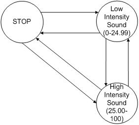
Illustration A representation of a simple interactive cue using multiple sounds. The numbers in parenthesis indicate the weight ranges for our two sounds. We set them via…
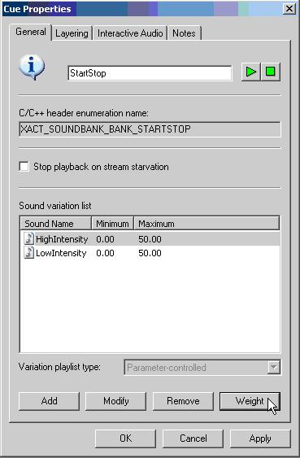
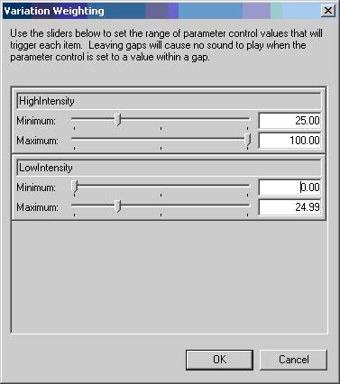
Illustration …the Variation Weighting dialog box in the General tab of the cue's property window.
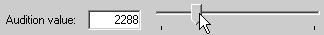
We can confirm these ranges by auditioning our cue from the Interactive Audio tab of the cue's property window. Hit the play button at the top of the window, then drag the audition slider up and down (remembering that this range reflects the programmer's values of 0–10000; so 2500 is going to be the transition point).
By default, all transitions are immediate, so we're hearing the interactive audio cue jump from low to high intensity without any kind of smooth transition. We could now edit the transition properties (again, by double clicking on the specific transition that we want to change) such that the low intensity music will crossfade to the higher intensity one upon a transition, for instance. Or we could adjust the low-intensity sound's range such that the sound could move into the 'Stop' state when the trigger variable was less than some value.
Note that it is legal for weight ranges to be overlapping. When the programmer-requested weight can be found in two separate sounds, one of them will be chosen randomly, which allows for an even greater degree of variability.
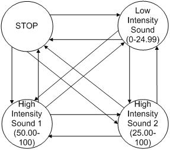
Illustration Sounds with overlapping ranges. When the trigger variable is between 25 and 49.99, "High Intensity Sound 2" will always be chosen. But when the trigger variable is between 50 and 100, one of the two "High Intensity" sounds will be chosen at random. Note that by default, each change to the trigger variable, even while remaining between 50 and 100, will randomly choose one of the two sounds again. To keep playing the same sound, we use the linger flag as described below.
Overlapping weight ranges also allow for a much more typically used function: the ability to keep an interactive cue from rapidly changing back and forth between two or more states. For instance, looking at the above example, as the trigger variable's value changes from 24.99 to 25.00, we jump from "low intensity" to "high intensity sound 2". When the value drops back to 24.99, we jump back. If the math involved in deriving the trigger variable's value causes it to fluctuate even slightly, our music is going to continually bounce back and forth.
Illustration Possibly undesired behavior. As our variable fluctuates slightly around the value of 25, the music repeatedly jumps back and forth from low intensity to high intensity.
What we'd prefer is the ability to add some degree of hysteresis; as long as the value doesn't move out of the state's range, the music should tend to remain on one sound or the other, rather than going back and forth. Then, if two states having an overlapping range, the music will remain more settled for slight fluctuations in value. For this reason, sounds have a linger property. When the linger property is set, changes to the trigger variable that still fall within the sound's weight range will keep us from transitioning to another sound. Note that since the sound might be used by several different interactive audio cues, this property is set from the sound's property window, not the interactive audio cue.
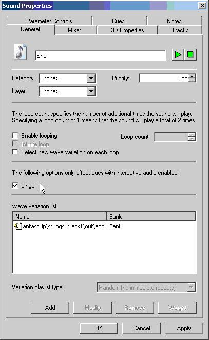
Illustration The linger property is set in a sound's property window.
A quick analogy to help describe the concept of the linger property is a thermostat. Without overlapping operating ranges, a thermostat would repeatedly turn on the furnace when the temperature dipped below the set value (say, 70 degrees Fahrenheit), and turn back off when the temperature warmed up to the set value. This would cause the heat to frequently turn on and off (perhaps many times per minute), shortening the furnace's operating life. Instead, most thermostats have built-in hysteresis; they might turn on when the temperature dips below 68 degrees, and then not shut off until the temperature reaches 72 degrees.
Similarly, if we overlap the ranges of our music states and use the linger property on each sound, small variable swings near the boundaries between states won't cause the music to rapidly transition back and forth.
Illustration Now our low- and high-intensity sounds have overlapping ranges, which means that if their linger property is enabled…
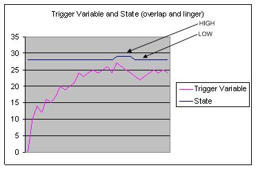
Illustration …the music is more stable, remaining in the low-intensity state until the trigger variable moves above 26, and then similarly remaining in the high-intensity state until the trigger variable moves below 24.
The following are some comments relating solely to auditioning of interactive audio cues via the XACT authoring tool (issues not present when triggering or using interactive cues from a title).
A sample interactive audio cue is included with the XACTInteractiveAudio XDK sample. This sample presents a very simple Xbox-side user interface that allows the user to adjust the value of the trigger variable (via IXACTEngine::SetVariable) in real-time. The cue itself is somewhat more in-depth than the above examples, consisting of four different sounds (plus of course the 'Stop' state). A basic diagram of the underlying states is provided here:
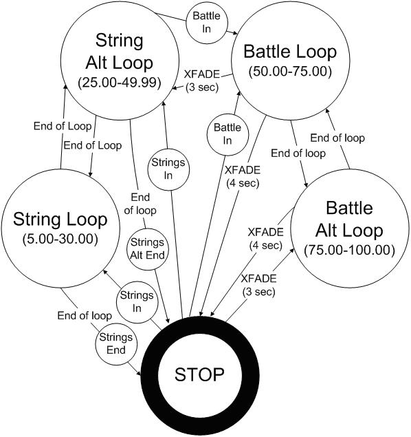
Illustration A diagram of the interactive audio cue's sounds (and sound states) for the XACTInteractiveAudio sample. The smaller circles indicate transition sounds. Note that for readability, not all transitions are displayed in this diagram. When not indicated otherwise, a transition is immediate. All transitions are to the beginning of the destination sound.
If you have the full Xbox Development Kit installation, you can take a look at the source XACT .xap file (XACTSounds.xap) from the sample's source directory: Samples\Xbox\Sound\XActInteractiveAudio. From there, you can audition the interactive audio cue using the Audio Console Application on the Xbox, or even within the XACTInteractiveAudio sample itself if you compile it with the instrumented version of the XACT library.
The music for this sample was graciously provided by Marty O'Donnell and Jay Weinland (Bungie™ Studios) from the title Halo, and is used in a manner similar to how it was implemented in that game. The sounds typically each consist of several loops of varying lengths, which are randomly chosen at the end of each loop. Meanwhile, game triggers can cause the music to transition to the 'alt' version at the end of the next loop. There are also non-looping transition sounds that provide intros and endings for the pieces of music. We added transitions between two entirely separate pieces of music (the 'string' piece and the 'battle' music) to demonstrate other uses. Each sound also has the linger flag set to keep the music from bouncing back and forth for any overlapping variable values.
The interactive audio features of XACT provide significant power and flexibility for creating more dynamic and compelling underscores than basic linear tracks can always provide. If you have questions about your specific implementation, or feedback on interactive audio techniques that have worked well for you, please let us hear about it! As always, questions, concerns, or comments about XACT or other Xbox tools can be directed to content@xbox.com.
For more information about topics presented here, please consult the XACT chapters of the Xbox Audio Best Practices Guide, the Xbox Development Kit Help documentation, or the white papers in the Audio Designer's Corner, or send an e-mail message to content@xbox.com.